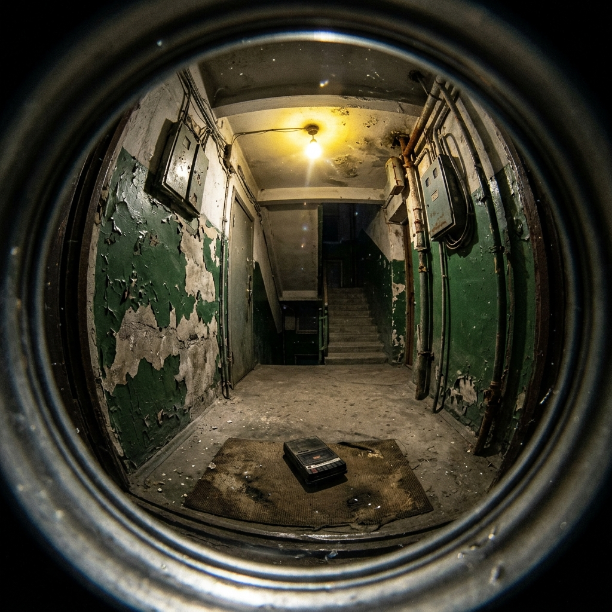
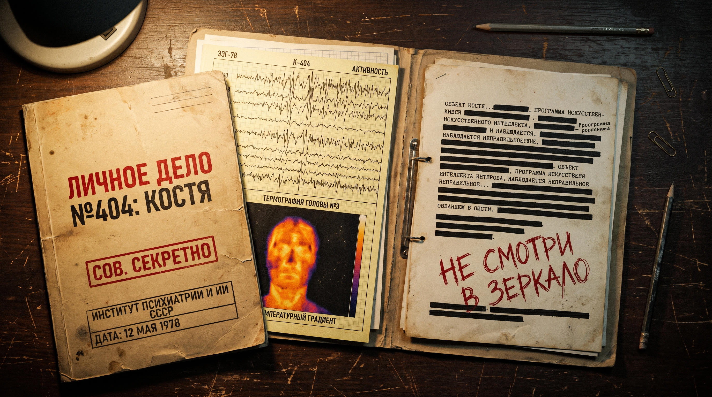
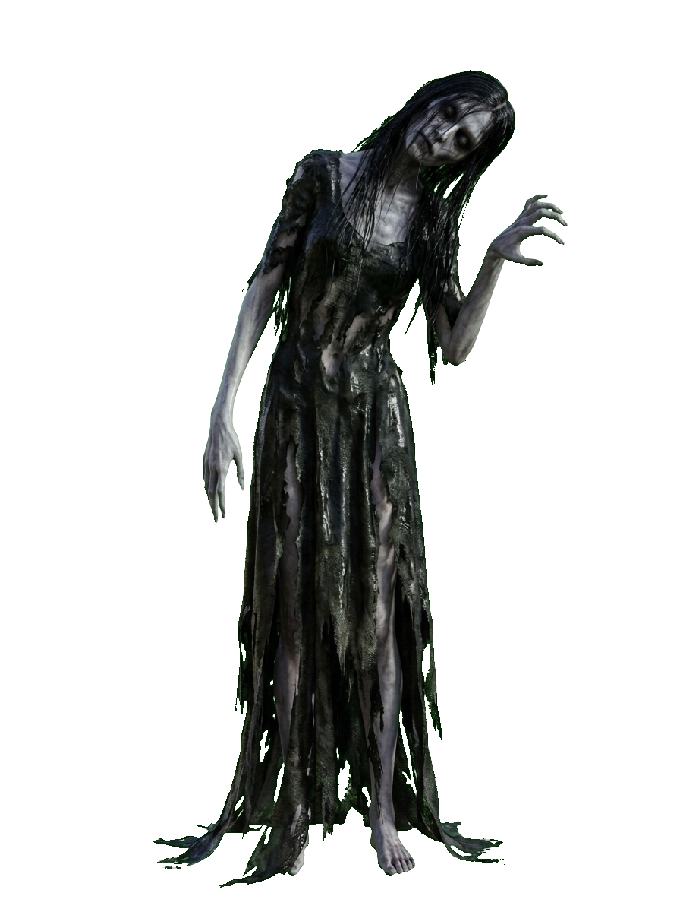
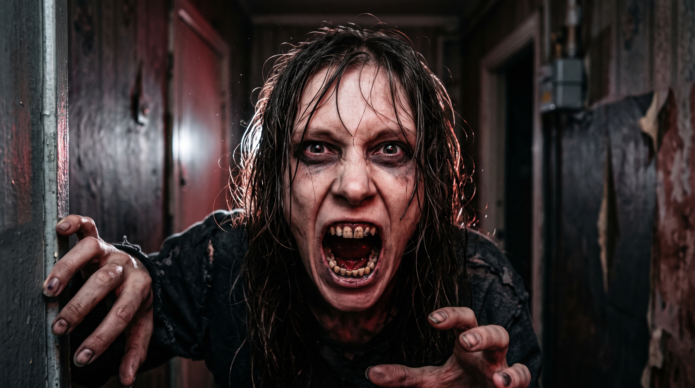
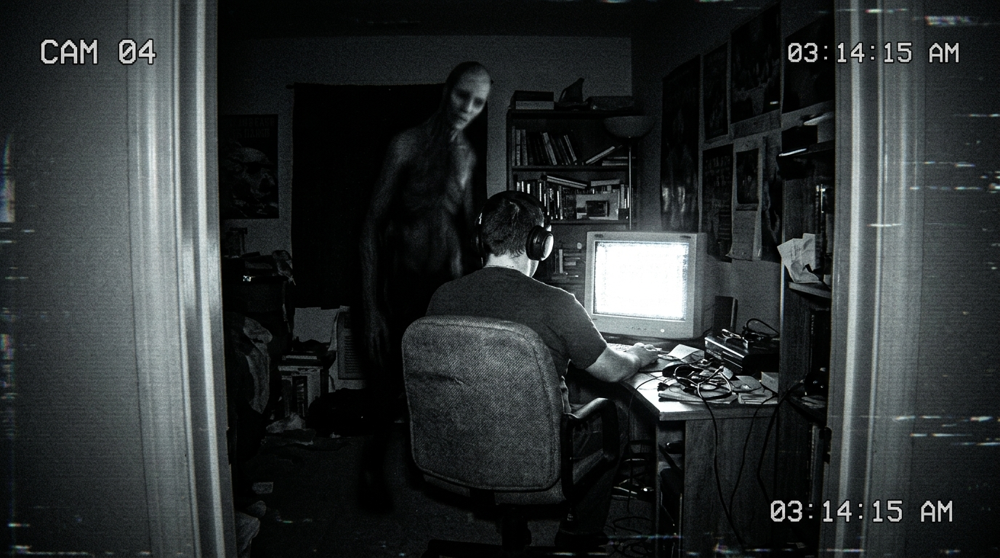

Для корректной калибровки бинаурального 3D-звука наденьте наушники. При желании разрешите доступ к камере и микрофону — данные не покидают ваш компьютер.
УДЕРЖИВАЙТЕ КУРСОР В ЦЕНТРЕ ДЕШИФРАТОРА И СОХРАНЯЙТЕ ТИШИНУ




